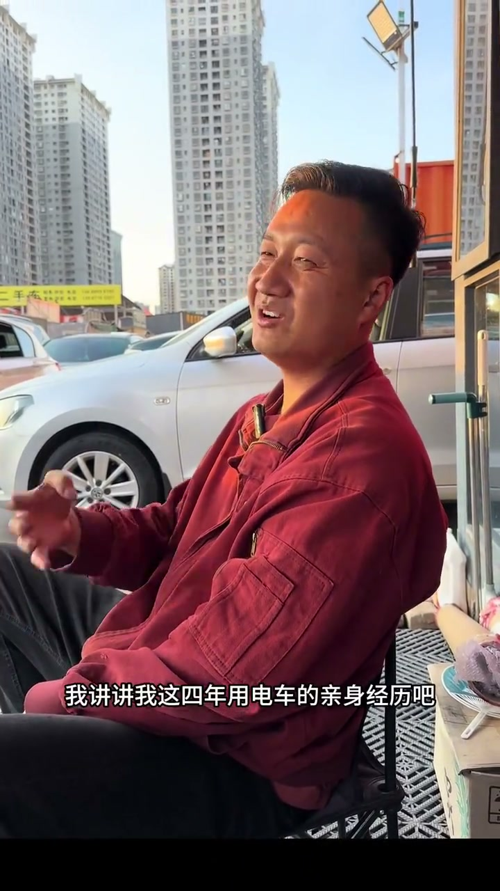
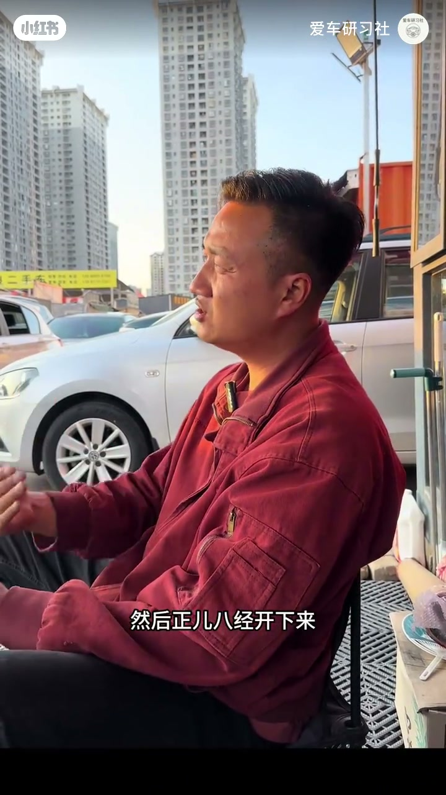
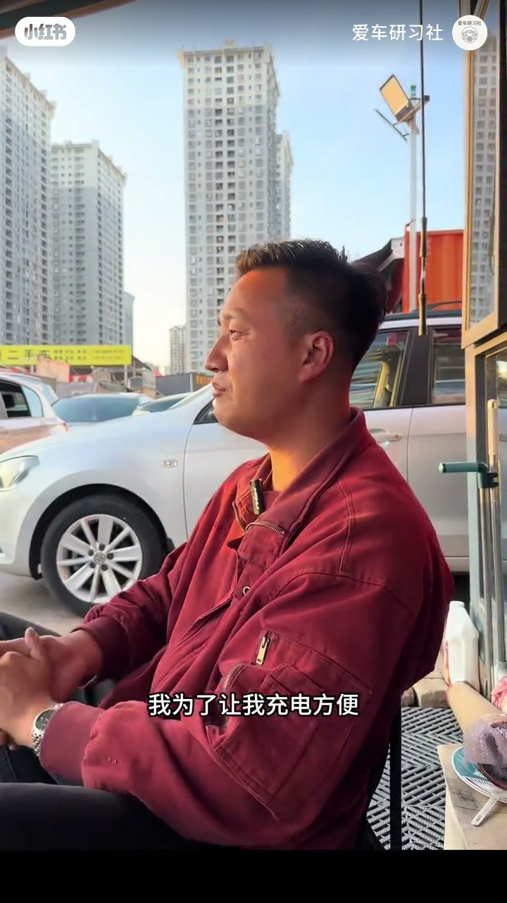
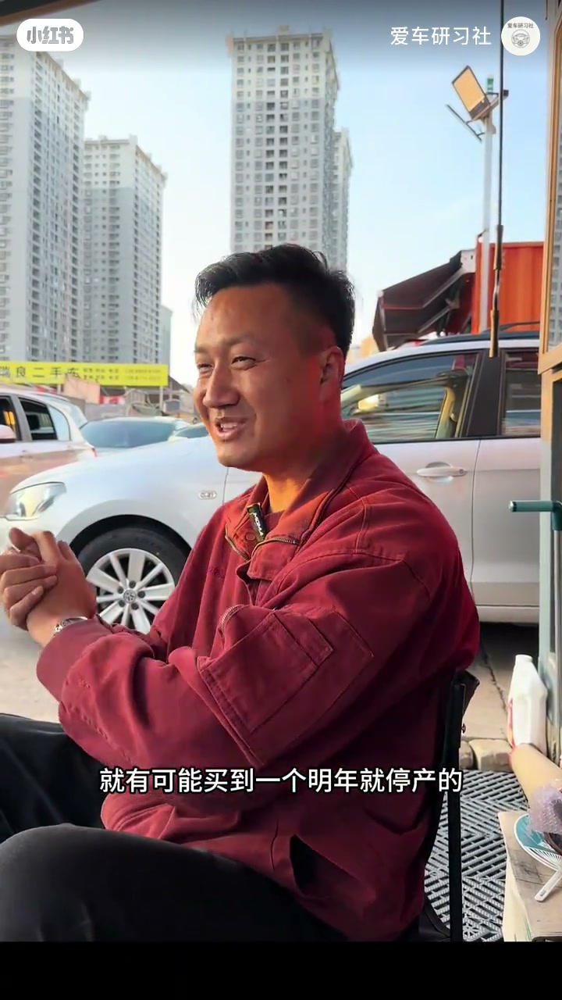
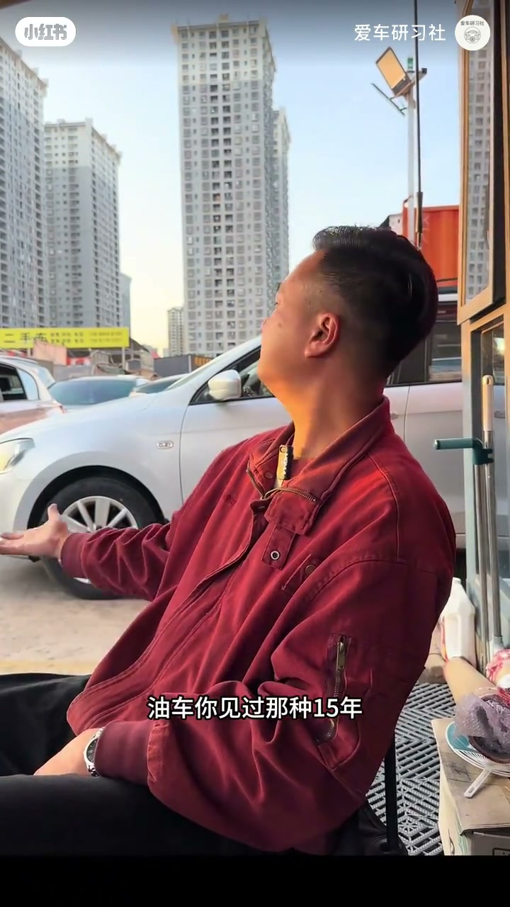

内容要点
爱车研习社户外访谈：车主开四年电车后换回油车，只讲四点亲身感受——续航名义里程用不满、外充时间比电价更折磨；车重带来更长刹车距离；车型与车企迭代快到可能明年停产，辅助驾驶也不敢托付生命；省下的油钱被二手贬值吃掉，而十年前的电车很少还在路上跑。这是个体经历总结，不是行业全景报告。
知识结构
标称700高速约300；20%–30%就要充；花十万装桩仍厌外充半小时。
电池重→两吨起步；制动距离长；辐射不谈。
新款眼花缭乱；可能停产；高速辅助未识别追尾。
27万四年亏十七八万；全保舍不得；油车长寿对比。
电车适不适合，要按「真实可用续航、补能时间、车重安全、残值与寿命」四件事一起算，不能只看标称续航和油钱差。
00:00-01:46续航与充电：名义里程打七折，时间比电价更折磨
开场直说：开了四年电车最终换回油车，只讲四点亲身经历。第一点续航：车标称700公里算高，但「正儿八经开下来」高速大约300，城区也就三四百——因为谁也不会把电从100%用到只剩百分之几；通常开到20%–30%就要去充，尾段续航等于用不到。
充电速度更让他焦虑。为方便花了约十万买车位装家充；外面充电价格一块二到一块五都能忍，忍不了的是时间：充半小时，走路去公司来回二十分钟，不可能干十分钟活再回来，只能傻站着等，还不宜坐车里玩手机；下雨更糟，别指望充着电先上班再回来——还有车位占用费，比停车费还高。00:05／00:16／00:55 可核。



01:46-02:53安全：刹车距离与车重，辐射不谈
第二点安全。自燃他网上看得多、亲身与身边没有经历过，但强调刹车距离的确更长：七百乃至一千公里续航的电车很重，轿车两吨起步、越野三吨，电池包沉；八十、六十公里时速踩下去，制动距离就是比油车长。
堆续航等于堆电池、加重整车，对轮胎、刹车盘、悬挂都是挑战；他自己开电车刹车时明显感到惯性大。有人提辐射，他说不在知识范畴，不谈。
02:53-03:45更新太快与辅助驾驶不信任
2025年电车新款据说八百多，选车眼花缭乱；更新快到「一不留神」可能买到明年就停产、或车企不在的车，OTA也无处可升。不要迷恋智驾质价比——他无法把生命安全交给智能驾驶：高速上前车追尾，辅助驾驶没识别到，撞了车头就过去。03:10 停产字幕对应。

03:45-04:41省钱被贬值吃掉；寿命对比收束
第三点「省不省钱」：省下的油钱在贬值过程中又吃完。当时电车约27万，开四年二手大约八九万，亏近十七八万。保险第一年八千多、第二年六千多、后来四千多；不买全保又怕颠簸刮到电池包换不起，还是得买。
第四点也是最重要：油车十五、二十乃至二十五年还在路上常见；电车发展也十年了，很少见十年前的电车还在跑。四点串完，换回油车的逻辑闭环。04:25 为寿命对比帧。

完整转录（138段）
以下文本由 Whisper medium 模型自动转录，可能存在少量识别误差，已尽可能修正。
我开了四年的电车
最终还是换回油车来了
为什么呢
我讲讲我这四年用电车的亲身经历吧
我就讲四点
第一呢就是这个续航
我的车是700公里的续航
算作是高的了吧
然后镇峨把景开下来
在高速上呢就是跑300公里
在城里面开呢
说白了一点呢
也是跑个三四百公里
这些人为什么呀
不可能吧
你不可能把电用干掉的
你充到百分之百
正常情况下
你开到个百分之二十
百分之三十你就要去充电了
有百分之二十的续航
你是用不到的
或者是跑不完的
谁可能把车直接每天跑到百分之几
百分之二再充电吧
全都是瞎扯的
还有一个就是充电的这个速度啊
也是特别焦虏的
我为了让我充电方便
花了十万块钱
买了个车位
在自家装了个充电桩
当时我去充电
在外头充电的时候
我们不说价格
一块二一块三一块五都无所谓
但是这个时间我是无法忍受
充电充半小时是吧
不可能我在这充的电了
跑去公卫上上班
路程可能走路来回二十分钟
我不可能走回去干十分钟的活
又回来了
只能傻傻的站在那儿等
你还不能坐在车上睡觉
或者坐在车上玩手机
对吧
大家都说充电的时候
坐在车上不安全
如果逗着下雨
逗着怎么样
是不是都不方便
你更别去妄想
在那充的电
先去上班下班再来开
你可别忘了
有一个车位占用费
那也很高的
比停车费还高
第二呢就是安全
其实自不自然呢
我也不知道
网上看的是比较多的
但是我亲身或者身边是没有经历过的
但是这个安全还有一点
就是刹车距离的确要长一点
你想嘛
七百公里八百公里
乃至一千公里续航的电车
你不知道它有多重吗
轿车都是两吨起步
越野车都是三吨
电池包它很重的
八十公里六十公里
你在踩刹车的过程当中
制动距离
它就是要比油车长得多
你们也别去奢望
哪天买到一个电车
可以跑一千公里了
两千公里了
不可能
你无脑堆电池的过程当中
就要把这个车的重量就加重了
对轮胎
对刹车
对刹车盘都是一种
还有包括悬挂了
都是一种挑战啊
我开电车的过程当中
在刹车的时候是明显感觉到惯性太大
也有人说开电车有辐射
那些东西倒是不在我的知识范畴之内
我就不谈了
2025年啊
电车新款上市的
总共有的800多款呢
选的过程当中让你眼花缭乱
电车更新速度快到你想都想不到
你一不留神
就有可能买到一个明年就停产的
或者明年这个电车车企就就不载掉的
最终你OTA升级
都没有地方去升
你也不要迷恋什么质价不质价
质价那个东西呢
哎呀
反正我觉得我是无法把我自己的生命安全交给职能驾驶的
有一次我在高速上杠前头有一个追头
我开的那个辅助驾驶
他们叫的
我也我也不说那个
最终他是没有识别到
撞了那个车头就过去了
第三呢
还有省钱不省钱这个事情
哈哈哈哈
你省下来的油钱在贬值的过程当中又给你吃完了
当时我那台电车是买了27万
开了四年
现在二手车市场就是八万九万块钱这个样子吧
亏得将近十七八万这个样子
你能不能承受保险
反正第一年的时候呢
是八千多
第二年六千多
现在就是四千多一年
你不买这个全保呢
又总觉得那天走点颠簸的路
刮着电池包
自己换不起还是得买
第四点呢
也是最重要的
油车你见过那种十五年二十年乃至二十五年的车
还在路上跑
但电车也已经发展十年了吧
你见过哪个十年前的电车
他在路上跑了